Operating Documentation
Direction 5193574-800, Rev# 22
LightSpeed 7.X Service Methods
Module Version 1.0, Version Date 6/29/11
Operating Documentation |
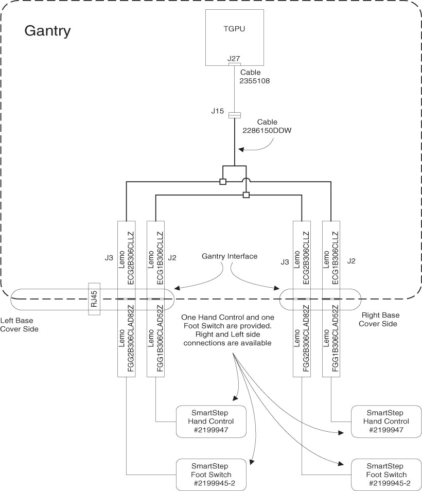
Illustration 1: Gantry external connection (back view)
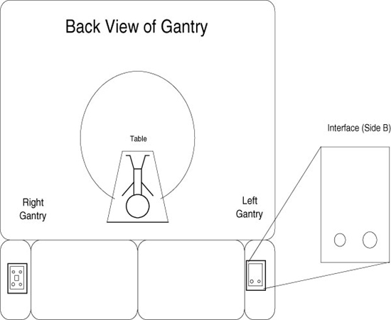
Remove existing faceplates - they may be blanks or, if installated, Cardiac Option faceplate.
Install the appropriate faceplate at indicated location per the table below using the four nuts removed with the original faceplates (two per faceplate).
| Faceplate | 11 Hole (2288882-3) | 8 Hole (2288882-2) | 7 Hole (2288883-5) |
| Faceplate Configuration | 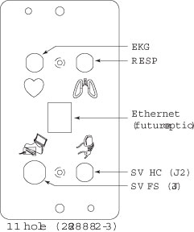 | 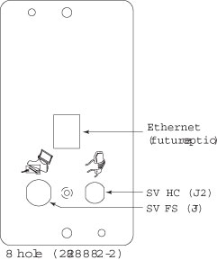 | 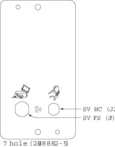 |
| Option Installed | Cardiac and SmartStep | SmartStep | Both Configurations |
| Location | MSUB - Left | MSUB - Left | Other side - Right |
Install the connector covers to the faceplates using 46-328417P74, 2290289-2, and 2290289 for each side’s faceplate.
Layout, but do not yet mount, the included cable (2286150) along the rear cross-tube of the gantry so the connectors can reach both faceplates.
Attach the SmartStep cable to the faceplate as follows:
With the outer conical nut removed insert a LEMO connector through the appropriate hole in the faceplate, with the red dot facing at the TOP.
Adjust the inside conical nut so there is enough thread appearing through the hole to attach the external nut while keeping the connection flush with the faceplate.
Repeat for the other three LEMO connectors.
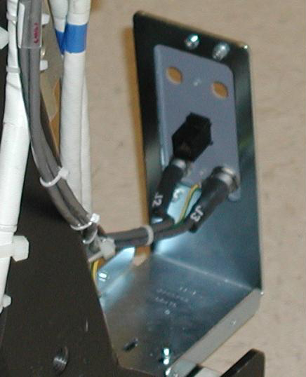 Insert connector J2 and J3 as shown. | 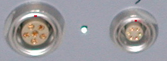 Install with Red dot facing at the top. | 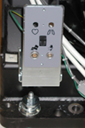 Place conical nuts to ensure connectors are flush with the faceplate as shown. |
Using the provided M4 screw (46-328417P4), washer (46-328430P2) and lock washer (46-328432P2), attach the SmartStep cable ground wire to the cable tie screw hole on the chassis. Remove paint as necessary to ensure a good electrical connection.
Illustration 2: Ground Wire Installation (Arrow on Rght) Smart Step connectors (Arrow on Left)
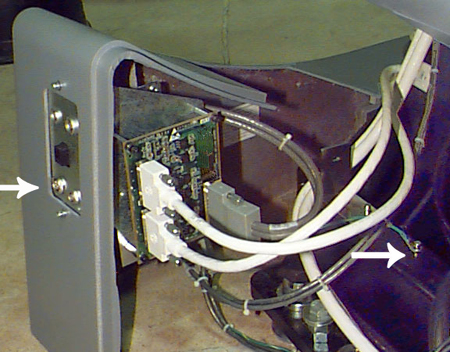
Route the cables and secure with ties as shown in Illustration.
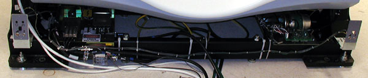
Locate the gantry MSUB.
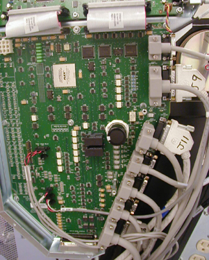
Locate the J27 Connector.
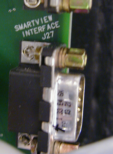
Install cable 2355108 to J27 Connector.

Connect the other end to gantry cable 2286150, J15.
Carefully route the cable along the gantry stationary frame.
Check to ensure the covers fit around the cables.